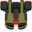

Controls
- Point anywhere with your mouse for the spaceship to follow it.
- Left click to shoot in front of your ship.
- Keep left click pressed to charge a more powerful blast.
- [P] Pauses the game. Hit 'P' again to resume.
Gameplay
- Shoot enemy spaceships to destroy them.
- Red bullets damage the player, avoid them.
- Some ships may explode upon contact or when destroyed, dealing damage to the player but not enemies.
- Some ships may drop a power-up upon death.
- Once your ship gets destroyed (Both SHIELD and ENERGY drop to 0), you can go to the shop and buy upgrades.
Enemies
- Bomb - Explodes after being destroyed and upon death. It has a search algorithm that helps it chase its prey.
- Doppelganger - Weak unit, shoots single bullets in front of it.
 Turcroise - Killer spaceship that has a higher defense. Shoots two bullets per attack.
Turcroise - Killer spaceship that has a higher defense. Shoots two bullets per attack.
- Bomber - Heavy unit with high resistance, shoots large bombs that deal extra damage, they are as slow as this ship while moving.
Changelog
- 0.0.2 Added changelog
- 0.0.3 Fixed font being too small
- 0.0.4 Reduced overall point gain
- 0.0.5 Nukes now shoot a minimum of 8 particles, this value can increase with every "Unavoidable Explosion" upgrade you get/buy
- 0.0.5b Fixed Nukes shooting burst particles.
- 0.0.6 Increased weapon charge time
- 0.0.6b Fixed explosion particles increasing in size based on your weapon charge
- 0.0.6c Fixed explosion particles being affected by "Unavoidable Explosion" upgrade
- 0.0.6d Fixed burst particles spawning higher than its parent particle
- 0.0.7 Enemies increase (more) in HP every enemy rank
- 0.0.7b Nerfed damage upgrade
- 0.0.7c Enemies now shoot more often in higher ranks
- 0.0.7d Increased game difficulty
- 0.0.7e Enemy shots no longer disappear every time your own shots passes over them.
- 0.0.7f Enemy shots now disappear only if your shot is bigger, they disappear more often on early ranks
- 0.0.8 Added a short delay after dying before the game over menu/shop comes up
- 0.0.9 Added a Pause button. Press 'P' to pause the game any time.
- 0.0.9b Added spaceship specs on Pause button. You can upgrade your ship right there
- 0.0.10 Deleted stars
- 0.0.10b Increased Nuke damage
- 0.0.10c Fixed HP bars being selected when clicking the screen to shoot (Mozilla Firefox)